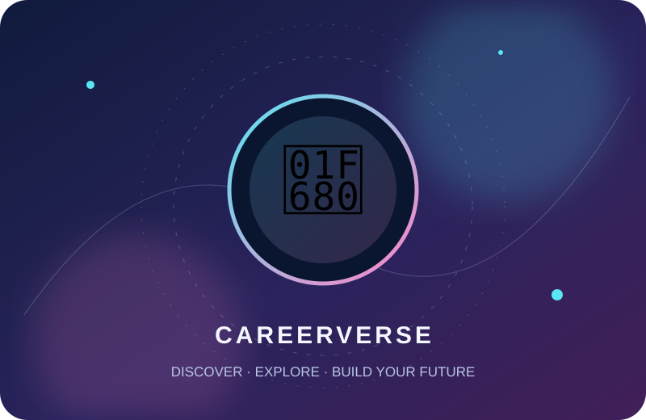
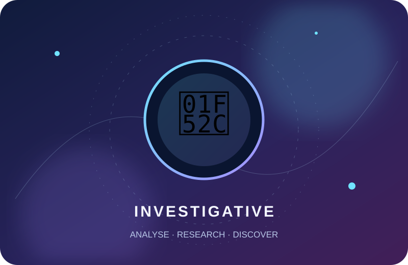
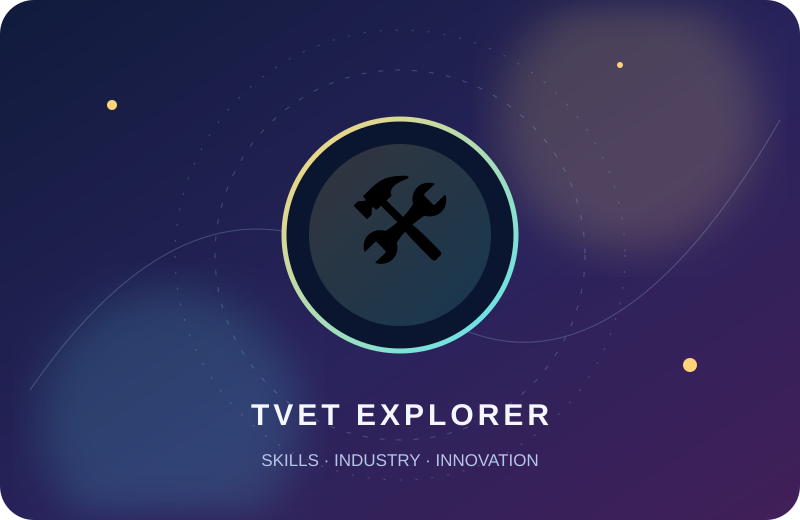
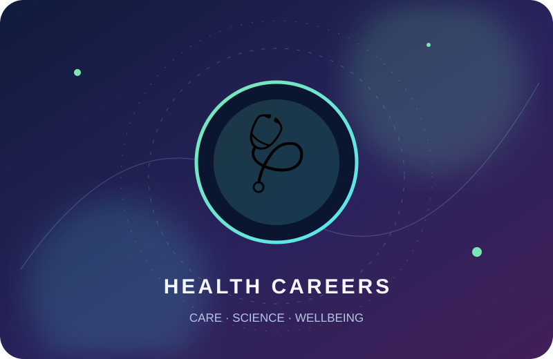
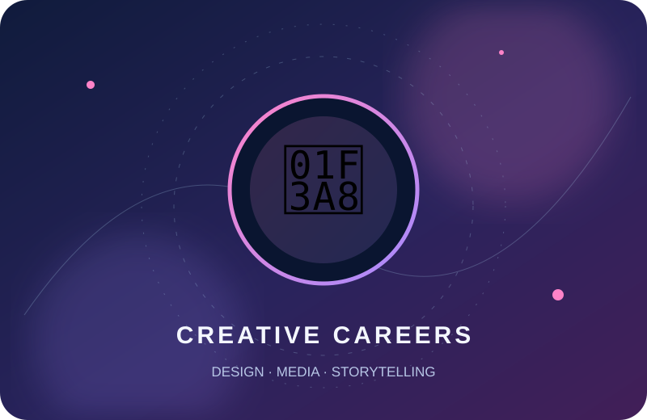
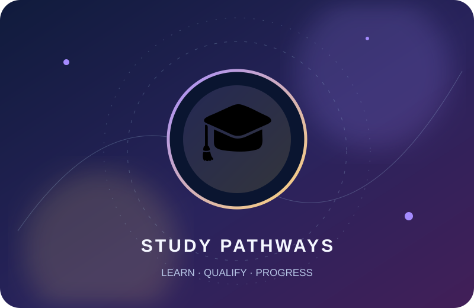

Discover your path.
Build your future.
Masuki dunia kerjaya interaktif. Kenali personaliti RIASEC, selesaikan misi, cuba simulasi pekerjaan dan bina masa depan anda — semuanya dalam satu pengembaraan.

Selamat datang, Explorer!
Setiap misi yang diselesaikan menambah XP dan membuka pencapaian baharu.
Pilih misi pengembaraan anda.
Semua permainan menggunakan profil, XP dan koleksi lencana yang sama.
Enam zon. Enam cara melihat dunia.
Terokai minat dan persekitaran kerja yang berbeza. Tiada satu kod yang mengehadkan masa depan anda.
Career Gallery
Teroka contoh pekerjaan, kemahiran dan persekitaran kerja.
Belajar melalui video kerjaya.
Terokai video pengenalan bidang, kisah kerjaya dan laluan pendidikan melalui carian YouTube.

Kenali Holland RIASECMinat, personaliti dan persekitaran kerjaya
Penerokaan TVETKemahiran teknikal, vokasional dan latihan
Kerjaya Sains & KesihatanKenali profesion dan suasana kerja
Kerjaya Kreatif & MediaReka bentuk, animasi, fotografi dan kandungan
Laluan Selepas SPMUniversiti, politeknik, kolej komuniti dan TVETMy Explorer Profile
Rekod kemajuan disimpan pada peranti/pelayar ini.
🏆 Achievement Collection
Lencana dibuka apabila misi diselesaikan.
SMK Maxwell · Unit Bimbingan dan Kaunseling
CAREERVERSE dibangunkan sebagai ruang penerokaan minat dan kerjaya untuk murid Tingkatan 1 hingga Tingkatan 6.
Logo rasmi sekolah boleh dimasukkan pada ruang identiti ini apabila fail logo disediakan.
🏅 Local Leaderboard
Paparan ini menunjukkan kemajuan pemain pada peranti ini, bukan ranking seluruh sekolah.
| Pemain | Level | XP | Misi |
|---|